드라마 웃긴·병맛 웹툰 추천 TOP 30
드라마 작품 중에서 개그, 판타지개그, 4차원, 가벼운 같은 요소가 들어간 작품만 골랐어요. 네이버웹툰·카카오웹툰·레진코믹스에서 조건에 맞는 작품 52개 중 인기 순으로 30개를 골랐어요. 인기 TOP 3: 극락왕생, 마흔 즈음에, 뽀대작렬
2026-10-05 기준 · 성인 작품 제외
내 취향으로 더 좁혀서 추천받기 →-
1
 카카오웹툰
카카오웹툰극락왕생
당산역 귀신 박자언 X 막무가내 지옥의 호법신 도명 윤회의 끝, 극락왕생을 위해 펼치는 퇴마 활극! “들려? 노래 불러. 체리필터의 [낭만 고양이]로…” 비 오는 날이면 합정에서 당산으로 넘어가는 2호선 지하철에 나타나는 ‘당산역 귀신’. 자신이 보이는 인간에게 다가가 ‘낭만 고양이’…
드라마개그환생카카오웹툰에서 보기 → -
2
 네이버웹툰
네이버웹툰마흔 즈음에
어느 덧 마흔살이 된 현성민은 주변을 돌아보니 혼자가 되었다는 현실을 절실히 깨닫게 된다. 자신의 인생 뿐 아니라 직장에서도 위기를 맞게 된 현성민은 진정한 행복을 찾기 위해 고군분투 하기로 결심한다. 불혹의 나이, 아직 늦지 않았다!
드라마개그하이퍼리얼리즘2024 연재직행열차고자극드라마네이버웹툰에서 보기 → -
3
 네이버웹툰
네이버웹툰뽀대작렬
사랑하지 않는 시대 꿈과 사랑은 커녕 계획도 사람도 없는 서른일곱 '김하영' 그런 그녀가 20년 전 뽀대나게 사랑했던 열일곱 '김 선'으로 돌아간다.
드라마가벼운감성적인청춘명랑녀네이버웹툰에서 보기 → -
4
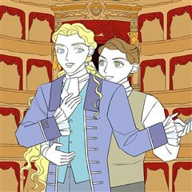
카카오웹툰카스트라토 ~거세 가수 이야기~
카스트라토는 아름다운 목소리를 유지하기 위해 성기 일부를 잘라낸 남성 가수를 말한다. 18세기 이탈리아 오페라가 꽃피우던 시기가 이들의 전성기였다. 음악학교이자 수도원인 피에타 데이 투르키니에서 어린 카스트라토 니콜라와 작곡가 지망생인 파트리크는 만나게 된다. 그리고 두 사람은 영원한…
드라마개그성장물카카오웹툰에서 보기 → -
5
 카카오웹툰
카카오웹툰시한부 드래곤의 생존법
시한부 인생 끝에 웹툰 속 드래곤으로 빙의했는데 또 다시 시한부 인생, 아니 용생이 되었다?! 갑부에다 수천년의 수명을 가진 세계관 최강의 생물 드래곤의 헤츨링으로 태어난 로이스. 하지만 시시각각 닥쳐오는 개연성 없는 위기에 언제 죽을 지 모른다니 이게 무슨 소리야! 이대로 얌전히 죽…
드라마개그빙의카카오웹툰에서 보기 → -
6
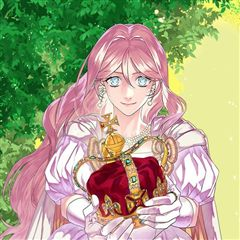
카카오웹툰치트라
공무원 준비 생활만 수 년. 그런데 이렇게 억울하게 죽다니...! 그래서일까요? 죽었다 태어나니 아름다운 여백작이 되어 있었다. 심지어 미남신에게서 게임 능력까지 받게 되는데- ‘뽑기...?’ 캐릭터 뽑기 능력을 가지게 된 그녀! 초 레어 미남 캐릭터를 뽑아가면서 세상을 널리 이롭게…
드라마개그하렘카카오웹툰에서 보기 → -
7카카오웹툰
예술고 음악천재는 환생한 파가니니
"난 음악 안 해." 음악에 전혀 관심 없는 평범한 인문계 고등학생 문주원, 어쩌다 보니 예고 음악반에 편입되었다. 그런데 이 평범한 학생, 사실 엄청난 비밀이 숨겨져 있다?! 바로 악마의 바이올리니스트 파가니니의 환생이라는 것! 주원이는 과연 예고에서 음악 천재로 거듭날 수 있을까?…
드라마개그성장물카카오웹툰에서 보기 → -
8카카오웹툰
내 새끼 데뷔시키려다 내가 데뷔하게 생김
평범한 직장인 여성 윤혜성. 서바이벌에서 탈락한 최애 나연우의 데뷔만을 오매불망 기다리던 중에 데뷔가 또 엎어졌다는 소식을 듣게 된다. “연우 돌려 달라고! 내가 뭐 때문에 거지 같은 회사에서 뼈 빠지게 일하는데! 으아아앙!!” 방구석에서 오열하다가 잠든 혜성의 눈앞에 나타난 낯선 공…
드라마개그성장물카카오웹툰에서 보기 → -
9카카오웹툰
생각해볼게
책에 파묻혀 지내는 열다섯 살 고영희. 인간관계는 재난과 같다고 생각한다. ‘가족’, ‘연인’이라는 말에는 그저 몸서리가 쳐질 뿐. 생각도 걱정도 많은 고영희 앞에 "좋아한다."며 마음을 고백하는 같은 반 소녀 김강아의 출현! 게다가 우연의 장난으로 한 집에 살기까지 해야 한다니...…
드라마개그힐링성장물카카오웹툰에서 보기 → -
10
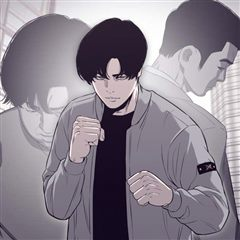
카카오웹툰계약하시겠습니까?
대한민국 최고의 부동산 투자 회사의 이사였던 윤석에서. 은둔형 외톨이이자 돼지인 김동규로. 좌절도 잠시, 복수를 발판 삼아 다시 일어났다. 기다려. 나를 죽인 대가를 톡톡히 치르게 해줄 테니까. 오늘도 난 윤석으로서 계획하고, 김동규로서 실행에 옮긴다.
드라마개그사이다복수극카카오웹툰에서 보기 → -
11
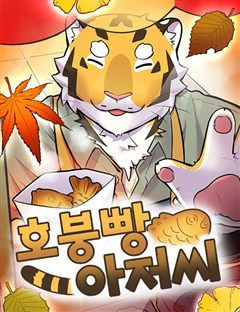
네이버웹툰호붕빵 아저씨
귀여운 디저트를 판매하고 싶은 꿈을 가진 호랑이, 맹호석. 한때는 무서운 조직의 일원이었지만, 손을 씻고 시작한 건… 다름 아닌 붕어빵 장사! 하지만 새 삶도 결코 순탄하지 않은데… 선입견과 편견이 가득한 시선 속에서, 호석은 과연 동네 주민들과 잘 어울리고, 디저트 판매의 꿈을 이룰…
드라마가벼운일상개그힐링감성적인공감네이버웹툰에서 보기 → -
12
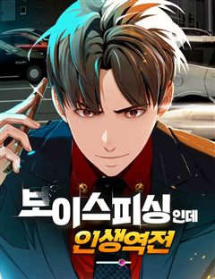
네이버웹툰보이스피싱인데 인생역전
"당신에게 미래를 팝니다!" 5년 전 조직적인 음해로 한 순간에 몰락한 국민배우 강주혁. 고통스럽게 지내던 그에게 어느날 의문의 전화 한 통이 걸려온다. 바로 미래를 예언해 주는 보이스피싱! 연예계 재기와 복수를 위한 위험한 거래가 시작된다.
드라마하이퍼리얼리즘인생역전참교육연예계네이버웹툰에서 보기 → -
13
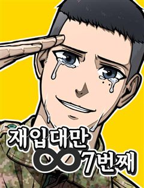
네이버웹툰재입대만 7번째
군 복무 기한 ∞, 어떻게 해도 탈출할 수 없는 병사 생활. 루프를 벗어날 유일한 단서는 병영일기의 '정말 완벽한 군생활이었다.' 이 문장 하나뿐이다. 재입대 7회차 이등병 김재환의 처절한 탈출기가 시작된다.
드라마개그2024 연재직행열차절망적인공감네이버웹툰에서 보기 → -
14
 카카오웹툰
카카오웹툰판타지 세계 속 바바리안으로 살아가기
매일 밤 세상의 모든 신에게 기도했다. 부디, 잠에서 깨어난 다음 날 자신이 환상의 한가운데 있기를. 그리고 어느 날 바라고 바라던 기도가 이루어졌다. 단지 그가 바라는 것과는 전혀 다른 형태로. 자고 일어나니 하얗디하얀 세계 백색의 설원 속 '바바리안'이 되었다. '바바리안'이라는…
드라마개그빙의카카오웹툰에서 보기 → -
15
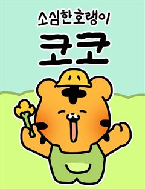
네이버웹툰소심한 호랭이 코코
"내는 소심한 호랭이 코코. 내랑 친구해줘유.." 처음으로 유치원에 가게 된 코코. 소심한 코코에게 유치원은 벅찬 시련들이 가득한데... 워떡혀! 짝꿍아 도와줘유..~ 우리들의 어린 시절이 떠오르는, 호랭이 코코의 무해한 유치원 적응기!
드라마가벼운감성적인가족성장물네이버웹툰에서 보기 → -
16
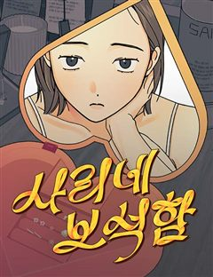
네이버웹툰사리네 보석함
사리가 만나는 사람들은 하나같이 어딘가 좀 이상하다. 늘 완벽하고 멋진 누군가를 동경하며 그렇지 못한 자신을 질책하는 평범한 21살의 여대생 송사리. 사리는 1년 동안 다양한 사람을 만나지만 그들은 하나같이 어딘가 좀 이상하다. 과연, 이들은 사리의 인생에 다신 없을 빌런이 될까? 아…
드라마하이퍼리얼리즘리얼로맨스감성적인공감네이버웹툰에서 보기 → -
17
 카카오웹툰
카카오웹툰나 혼자 부활한다
『고유능력: 부활』 “뭐지? 이 개사기 개꿀 먼치킨 스킬은?” 하지만 강현은 몰랐다. 죽어도, 죽고 싶어도, 죽지 않는다는 게 어떤 의미인지를… 불사의 몸으로 지구에서 가장 악명 높은 헌터가 된 남자! 인류의 존망, 아니 존망한 인류를 위해, 오늘도 나 혼자 부활한다!
드라마개그미스터리게임판타지카카오웹툰에서 보기 → -
18카카오웹툰
존버닥터: 닥터 섬보이
성형외과 전문의 자격증을 딴 ‘도지의’는 군의관 대신 3년 동안 보건의료 취약지구에서 근무하는 ‘공중보건의사(공보의)’에 지원하고, 극악의 합격률에도 불구하고 공보의에 합격하여 쾌재를 부른다. 하지만, 그가 발령받은 섬 ‘편동도’는 열악한 인프라와 주민들의 진상으로 공보의 커뮤니티에서…
드라마개그직업드라마카카오웹툰에서 보기 → -
19
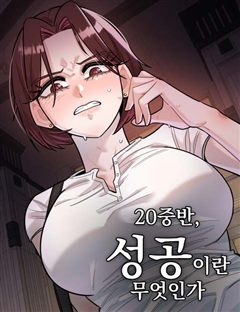
네이버웹툰20 중반, 성공이란 무엇인가
'솔직히 내가 성공 안 하면 누가 하냐?' 자기 객관화 0%의 성공 집착남 동훈이의 이십춘기 성장통...
드라마하이퍼리얼리즘블랙코미디공감성수치고자극드라마네이버웹툰에서 보기 → -
20
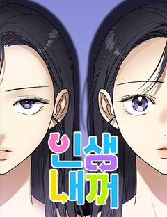
네이버웹툰인생내꺼
"힘든 인생, 편해지고 싶다" 우울증에 걸린 가난한 고등학생, 전주인과 주도권은 천재들의 영혼에게 자신의 몸을 팔아버린다. 그로부터 13년이 흐른 어느 날 눈을 뜨니 그들은 대기업 의장과 조폭 보스가 되어있는데... 갑자기 엄청나게 대단해진 인생 내 맘대로 살아도 될까?
드라마가벼운공감재벌녀명랑녀네이버웹툰에서 보기 → -
21
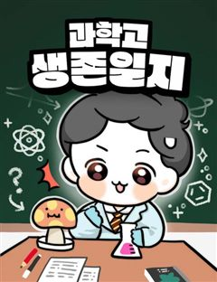
네이버웹툰과학고 생존일지
과학보다 만화가 좋았고, 수학은 보기만 해도 머리가 아픈 찐빵이. 그런 내가... 대한민국 영재들만 모인다는 과학고에 덜컥 입학했다. 천재들 사이에서 살아남기 위한, 범재의 눈물겨운 생존 분투기! 100% 실화 기반 하이퍼리얼리즘 일상툰 :3
드라마개그가벼운컷툰독자PICK네이버웹툰에서 보기 → -
22
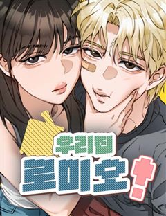
네이버웹툰우리집 로미오
여름방학을 맞아 집에 내려온 솔은 정체불명의 남자 로미와 마주한다. 엄마의 남자친구로 보이는 그와의 불편한 동거가 시작되자, 솔은 끊임없는 의심과 오해 속에 휘말린다. 하지만 함께 지내며 조금씩 드러나는 로미의 진심, 엄마와의 갈등, 그리고 소꿉친구 도현의 마음까지 겹쳐지면서 솔은 점…
드라마개그가벼운병맛까칠녀네이버웹툰에서 보기 → -
23
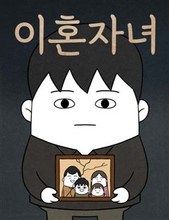
네이버웹툰이혼자녀
오랫동안 연을 끊었던 아버지의 죽음. 장례식장에서 마주한 건 눈물이 아닌, 파도처럼 밀려 드는 기억과 상처였다. 그 끝에서 '제훈'은 삶과 용서에 대해 다시 고민하게 된다.
드라마하이퍼리얼리즘2025 지상최대공모전감성적인시리어스네이버웹툰에서 보기 → -
24네이버웹툰
중대장은 실망했다
마흔 살이 넘은 중대장은 멋진 모습을 보이고 싶지만 요즘 애들, 요즘 군대는 왜 이렇게 변해버린 것일까! 참으로.. 중대장은 실망했다!
드라마개그중년일상요즘핫한추천작네이버웹툰에서 보기 → -
25
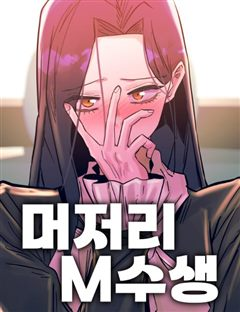
네이버웹툰머저리 M수생
사교육비 월 400, 여친 있음, 친구 많음. 성적도 곧이곧대로 '남들보다'는 높은 편. 그렇기에 꿈도 높게 가지는 천재범은 현세 의대를 꿈꾸며 입시를 준비 중이었다. 하지만 예상과 달리 수능을 망쳐 여자 친구와 재수하게 되었다. 그런데 수능 하루 전날 여자 친구의 이별통보…. 이내…
드라마하이퍼리얼리즘공감성수치입시러브코미디네이버웹툰에서 보기 → -
26
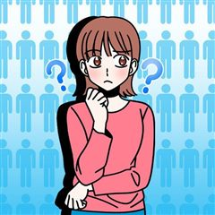
카카오웹툰남자 어디서 만나요?
서른 중반의 미혼 김미영은 잘 먹고 잘 사는 싱글 라이프를 즐기던 중, 갑작스러운 친구들의 결혼 소식에 홀로 남겨진 기분을 느낀다. 이대로 가다간 고독사 엔딩을 맞이할 것만 같은 위기감에 미영은 어플, 소개팅, 동호회, 결정사를 전전하며 결혼할 남자를 찾아 나선다. 그러나 새로운 남자…
드라마개그공감오피스카카오웹툰에서 보기 → -
27
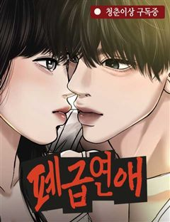
네이버웹툰폐급연애
서울 고시원에 사는 이재훈은 결핍과 열등감 속에서 무감각하게 살고 있다. 뜨거운 여름 날, 그는 익명 채팅방에 연애썰을 풀기 시작하고 뜻밖의 관심과 환호 속에서 처음으로 살아있는 기분을 느낀다. 3호실 여자와의 썸, 오픈채팅방 ‘코코로즈’와의 관계를 계기로 그는 점점 더 위험한 선택을…
드라마하이퍼리얼리즘블랙코미디고자극드라마리얼로맨스네이버웹툰에서 보기 → -
28
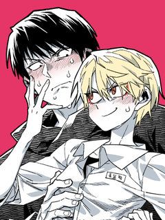
레진코믹스남고 소년
대문 남고의 유일한 홍일점인 '홍일탁'. 물론 이름과 별명과는 다르게 남자다. 왜소한 체격과 곱상한 외모 덕분에 찐따부터 일진에 이르기까지 자신을 무시하기에 이르고 교내 서열 꼴찌에 머무르고 있었다. 과거, 중학교 2학년까지만 해도 유명한 일진이었던 일탁은 자신의 한 문제로 인해 먹이…
드라마개그BL성장물숏드라마레진코믹스에서 보기 → -
29
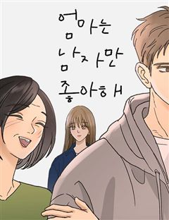
네이버웹툰엄마는 남자만 좋아해
평생을 오빠와 차별받으며 살아온 주인공 안나희는 여전히 엄마의 사랑을 받고 싶다. 오빠가 결혼할 사람을 데려오며 엄마의 첫 번째가 될 수 있단 기대감에 차오르지만 예상치 못한 사람이 등장하는데... 엄마와 나희와 새언니, 세 여자는 어떤 선택을 하고, 어떤 가족이 될 수 있을까?
드라마하이퍼리얼리즘자극적인공감가족네이버웹툰에서 보기 → -
30
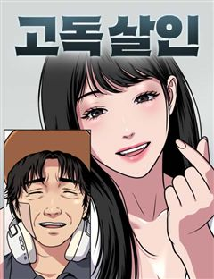
네이버웹툰고독살인
무시 당하며 살아온 밑바닥 인생의 중년 남성 고영도는 술에 취해 사적인 장면이 담긴 영상을 남긴다. 그날의 영상이 실수로 생중계 되자, 외면 받던 그의 비참한 일상은 뜻밖의 관심을 받는다. 위로처럼 보였던 관심은 곧 고영도의 삶을 예상치 못한 방향으로 이끌기 시작한다.
드라마하이퍼리얼리즘블랙코미디고자극드라마자극적인네이버웹툰에서 보기 →